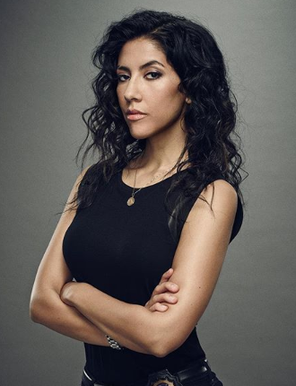

Stephanie Beatriz (Neuquén, 10 de fevereiro de 1981) é uma atriz argentina-americana. Ela é mais conhecida por interpretar Detetive Rosa Diaz na série de televisão Brooklyn Nine-Nine, da NBC. Além de estrelar como Bonnie no filme independente "A Luz da Lua" e como Mirabel Madrigal em "Encanto (filme)"
Beatriz nasceu em Neuquén, na província de Neuquén, na Argentina, filha de pai colombiano e mãe boliviana. Com os pais e uma irmã mais nova, ela chegou aos Estados Unidos aos três anos de idade. Ela cresceu em Webster, Texas e frequentou a Clear Brook High School. Se tornou cidadã estadunidense aos 18 anos. Se formou no Colégio Stephens em 2002 e mudou-se para Nova York para continuar atuando. Em 2010, ela se mudou para Los Angeles, onde reside atualmente.
Em julho de 2016, Beatriz revelou via Twitter que ela é bissexual. Ela também contou que estava sofrendo de transtornos alimentares. Em outubro de 2017, Beatriz anunciou seu noivado com Brad Hoss.
Beatriz teve papéis menores nas séries policiais de televisão The Closer e Southland, bem como no papel recorrente da irmã de Gloria, Sonia, na comédia Modern Family, da ABC. Ela apareceu no curta-metragem independente de 2013, Short Term 12. Também em 2013, ela interpretou a detetive Rosa Diaz no Brooklyn Nine-Nine(2013-2021), uma série de comédia de ação baseada em torno dos membros de uma delegacia de polícia do Brooklyn. Ela teve inúmeras aparições no palco no Oregon Shakespeare Festival, no Theatreworks USA, no The Old Globe Theatre e no Yale Repertory Theatre.
Beatriz estrela como Bonnie no filme independente, A Luz da Lua, escrito e dirigido por Jessica M. Thompson. A Luz da Lua estreou no festival de cinema South by Southwest (SXSW) de 2017, onde ganhou o Prêmio do Público para a Competição Narrativa. Foi revisto positivamente em The Hollywood Reporter, que afirmou que "Beatriz oferece um poderoso ... inabalável, autêntico desempenho" e na Variety, que disse que o filme foi "profundamente dilacerante" e o desempenho de Beatriz foi "habilmente equilibrado e julgado". Em 2019, Stephanie fez sua estreia como diretora no oitavo episódio da sexta temporada de Brooklyn Nine-Nine intitulado, "He Said, She Said". O episódio foi inspirado no movimento "Me Too", sobre assédio e agressão sexual.